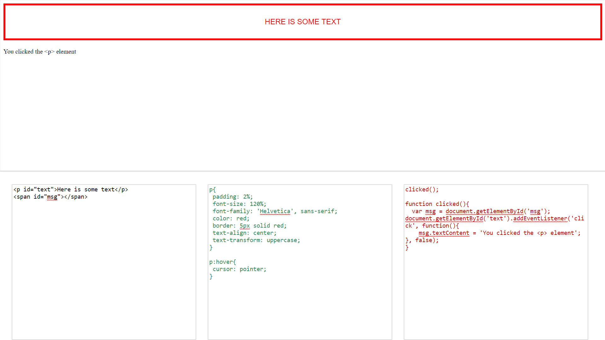
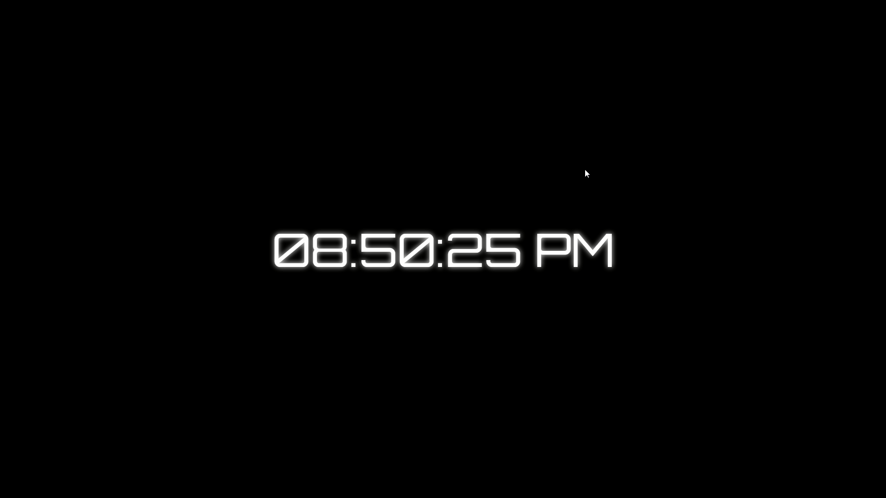
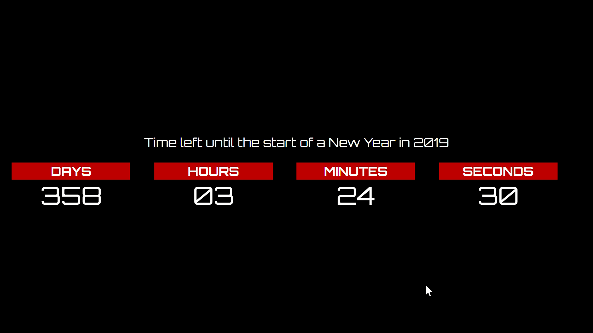
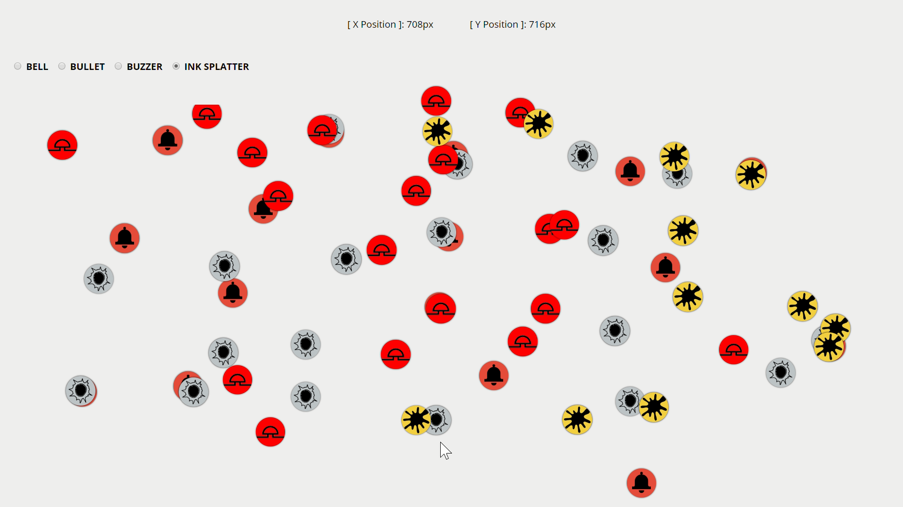

A basic HTML live code editor, for HTML, CSS & JavaScript.
Very simplistic when compared to other established tools
such as JSFiddle but there is always room for improvement.
:)

Animated Stylish digital clock. Currently basic
and only rendering time in the 12-hour clock format.
Will add option to change between 12-hour and 24-hour.

Animated countdown clock. It shows the
countdown for days, hours, minutes and seconds.
A nice to have feature would be to calculate someone's
birthday from a field input.

Event clicking driven mouse doodle. The image/
icon is rendered upon mouse click. The position for
the last click is shown at the top and you have radio buttons
to control which icon(s) to draw.